Over the years the interest in the stamps has been falling to the point that what seemed like a safe value 30 years ago today has seen the price fall to unsuspected limits at that time.
It is now that for about five years it has been returning some interest in the face of falling prices. Great collectors take advantage of this juncture to complete collections and get stamps that once seemed very difficult. Although, the current market price is influenced by the ease with which today can falsify materials. But for a counterfeit to be so good that it can supplant the original, a lot of investment is needed and today even that investment is not profitable because of the scarce demand to acquire high value stamps.
To make matters worse many of the generations who collected stamps are now older and want to get rid of the stamps to finish their years in a more comfortable way.
That's where the real bargains are emerging since the professionals who buy do not even offer the amount that cost then to acquire them. These to pay for these collections sell their leftovers on the Internet or in the squares of towns or cities at very low prices.
No doubt when this bubble ends below, and start to have a market outside of Spain in those emerging countries that today are major powers such as India and China, all these stamps will return to take their place and will be absorbed by outsiders. Since the middle and upper middle classes grow at a good pace. Spain being a country so famous outside our borders and having so little population, shots of a million stamps will go from being large to ultra-short throws. Everything will come and there will have to be waiting for the moment ....
A postage stamp is a small piece of paper issued by a post office, postal administration, or other authorized vendors to customers who pay postage (the cost involved in moving, insuring, or registering mail), who then affix the stamp to the face or address-side of any item of mail—an envelope or other postal cover (e.g., packet, box, mailing cylinder)—that they wish to send. The item is then processed by the postal system, where a postmark or cancellation mark—in modern usage indicating date and point of origin of mailing—is applied to the stamp and its left and right sides to prevent its reuse. The item is then delivered to its addressee.
Always featuring the name of the issuing nation (with the exception of the United Kingdom), a denomination of its value, and often an illustration of persons, events, institutions, or natural realities that symbolize the nation's traditions and values, every stamp is printed on a piece of usually rectangular, but sometimes triangular or otherwise shaped special custom-made paper whose back is either glazed with an adhesive gum or self-adhesive.
Because governments issue stamps of different denominations in unequal numbers and routinely discontinue some lines and introduce others, and because of their illustrations and association with the social and political realities of the time of their issue, they are often prized for their beauty and historical significance by stamp collectors whose study of their history and of mailing systems is called philately. Because collectors often buy stamps from an issuing agency with no intention to use them for postage, the revenues from such purchases and payments of postage can make them a source of net profit to that agency.
[Fuente: WIKIPEDIA]
The issuance of the first postage stamp is part of a profound reform of the British postal service undertaken by James Chalmers (1834) and Rowland Hill (1837). Until then the shipment was paid by the recipient based on the kilometers traveled and not by weight. Hill proposed that the shipment be paid by the sender at a uniform rate based on weight and not mileage.
Previously stamps used to carry an engraving of the issuer of the stamp in which it contained the place of origin of the shipment and the date of the shipment was added. In addition, they used to have recorded the rate of the one that made the shipments with their corresponding tax.
This goes to say that a currency was normalized only to pay for shipments. That is why there was a large regulation and that this process will be carried out from the central administration. In the case of Spain from the Fabrica de Moneda y timbre. And is that the new stamps would have the same value as a currency while limiting the use to the same purpose. As of today, it is not possible to pay for normal goods on stamps, as it is not possible to pay with cryptocurrencies.
The stamps once spent a time began to have people who stored the stamps and collected and began to speculate with the value to some extent because there were stamps that were issued in large quantities and others in very few. That's where philately would come from.
 De aquí cabría resaltar que tanto el dentado como el centrado influye mucho en el precio final del sello a coleccionar. A veces es casi del 50%, en sellos que suelen estar descentrados el centrado se considera raro de ahí que tenga más valor.
De aquí cabría resaltar que tanto el dentado como el centrado influye mucho en el precio final del sello a coleccionar. A veces es casi del 50%, en sellos que suelen estar descentrados el centrado se considera raro de ahí que tenga más valor.
It is not true that you have to reach 50% but the seller will try to apply this percentage based on the official price catalog for the corresponding series.
Overloads are usually quoted in the catalog of stamps, with different series being overloaded and those that are not. This when it is an official overload because if it is not the seal will have lost its value being considered postmarked. And is that the stamps canceled generally lower the price of the seal around 90%.
Although as everything if the seal is very scarce either postmarked or will not have an intrinsic value.
Another factor to consider is whether it is a stamp that by mistake has been printed different from the original series. These seals tend to be scarce because the defect in the printing press is corrected immediately and for that reason they are worth much more than the original ones.
As an example, it is worth highlighting the ruling a year ago in which the cathedral of Burgos appeared on the seal of León This would be used by a multitude of speculators to get hold of all those who picked up the error.
Recently, interest in stamps has been lost, and there are many people interested in getting rid of their collections. This is because the people who started collecting stamps would be in the 50s-60s. These people are already very old and many want to enjoy their investment. However, the stamps are in decline, their use is testimonial and is limited almost to parcel shipments because the sending of letters with new technologies has almost completely disappeared. If perhaps people with a tradition of sending Christmas Christmas usually buy stamps.

 A esto se le añade los sellos ATM que son etiquetadas franqueadoras por correos en los que el valor del envío se imprime en el momento de matasellarlo. Estos sellos también se coleccionan y su uso es desde 1991 con lo que existen todavía muy pocas etiquetas diferentes si bien las tiradas han sido muy grandes, por lo que el valor es bien poco.
A esto se le añade los sellos ATM que son etiquetadas franqueadoras por correos en los que el valor del envío se imprime en el momento de matasellarlo. Estos sellos también se coleccionan y su uso es desde 1991 con lo que existen todavía muy pocas etiquetas diferentes si bien las tiradas han sido muy grandes, por lo que el valor es bien poco.
In the image on the right, several of these labels are shown. In the case of the left, a series of means of transport that were taken a posteriori since the former were based solely on the logo of the post office and they did not think about doing them exposing anything.
Later they would be grouped in series with some motive whether they are means of transport, animals, canvases, etc.
The use of labels would reduce the demand for stamps and to adjust supply and demand shorter runs would be made. This is a point in favor of modern stamps that are scarce and above all have been used less so that a modern stamp even postmarked is worth more than a stamp of 4 decades ago.
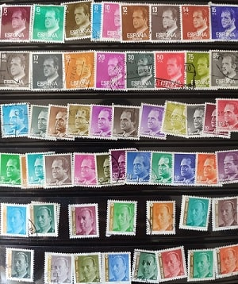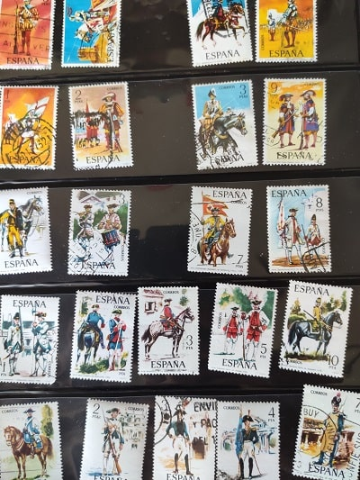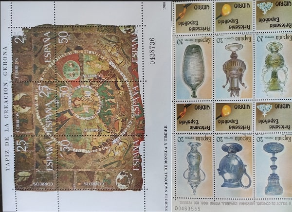Los sellos más comunes son los de la cara del mandatario, Franco y Juan Carlos I y de valor nominal bajo. Si bien hay alguna excepción con una serie de colores que fueron tiradas más cortas que otras. A continuación muestro la tirada completa de los sellos del rey Juan Carlos de finales de los 70s.
I also show other seals of that decade, such as that of soldiers whose value is also scarce due to the large number of them.
Also since the 80s there is a tendency to make complete sheets that agglutinate a complete series. In collecting if these come without separating the price is higher.
An income, tax or fiscal stamp (in French, stamp, stamp) is a sticker commonly used to collect taxes or costs on documents, tobacco, alcoholic beverages, drugs and medicines, game cards, hunting licenses , firearms licenses, and many other things.
Tax stamps are stamps used to collect taxes and payments. The government is in charge of issuing them, be they national or local, as well as the official bodies of various classes. They have many shapes and can be adhesive or not, perforated or not, printed or embossed, and of any size.
In many countries, they are as detailed in their design as bills and are often made from the same type of paper. The high value of many tax stamps means that they can contain security devices to prevent counterfeiting.
These stamps were widely used in their origins, existing a lot of variant. There are catalogs specialized in this type of stamps. At first they were collected like the rest of the stamps but later they would be out of the official catalog.
The stamps on the right are part of my collection and I have some replicas of old paper stamps of the first prosecutors (1870 onwards) with the allegory of the republic as those of the other sheet. In those there are from the times of Alfonso XII and Alfonso XIII until those of Franco with the Yoke and the arrows.
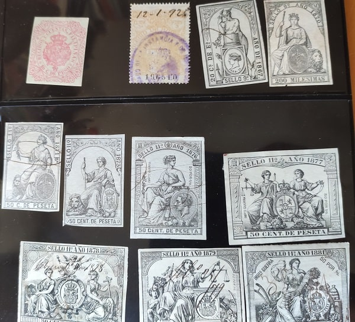

These stamps together with the prosecutors would be out of the catalog and would be part of the telegraphs. With time they have been recovering importance and value as a sample of our history.

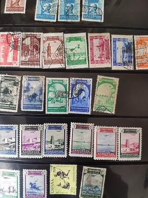 In the nineteenth century Spain still had overseas territories such as Cuba and the Philippines and some other island and part of North Africa. In these territories, a Spanish stamp would be issued. The last colonies to be lost would be the north of Morocco, Ifni and Fernando Poo that they would do in Franco's time with the famous green march. As soon as stamps were no longer issued, they would charge more value, although due to the large printouts of the last stamps, only those prior to 1930 have real value.
In the nineteenth century Spain still had overseas territories such as Cuba and the Philippines and some other island and part of North Africa. In these territories, a Spanish stamp would be issued. The last colonies to be lost would be the north of Morocco, Ifni and Fernando Poo that they would do in Franco's time with the famous green march. As soon as stamps were no longer issued, they would charge more value, although due to the large printouts of the last stamps, only those prior to 1930 have real value.
Next I will show Ifni stamps (€ 0.10 unit, € 0.30 catalog) without great philatelic value and others from Morocco that have a lot more (€ 1-10 unit).
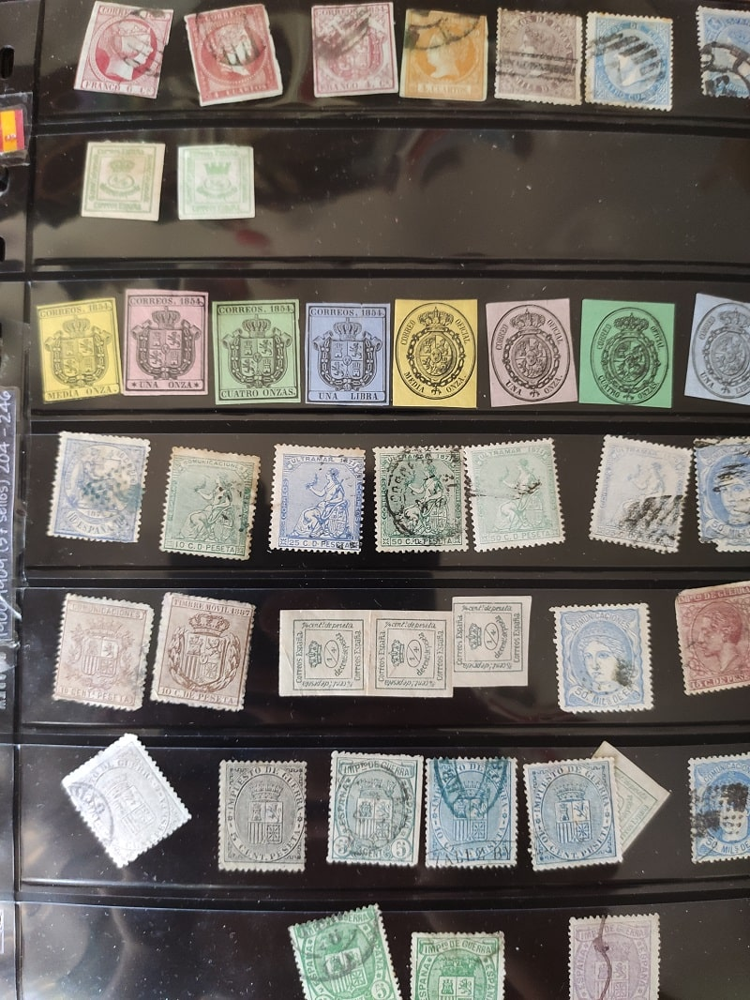>Estos sellos al ser los primeros del catálogo EDIFIl son los que más valor tienen. Un sello de Isabel II de alto valor fácial (reales o escudos), puede costar una fortuna (de 1000 a 20000€).
While it is quite unlikely that you have them since these stamps are usually seen in auctions. They are falsifiable because if you rent make a careful copy, it is better to avoid collecting these relics.
Especially in new condition. Recall that 8 escudos formerly today would be about € 600 to € 1200 to change. 8 escudos would be the equivalent of 200 old pesetas. If you trace the analogy and add inflation since then you will have equivalence. 4 reales was the same as 1 peseta and 1 real equivalent to 34 maravedies (6 maravedies of 8) that I will explain when I talk about the Spanish monetary system and its history. So things a peseta 200 years ago would be a lot more than 50 euros today. On the other hand, Alfonso XIII would reduce the difference 4 or 5 times due to inflation.
Of these stamps it is best to have low series that were equivalent to cents and are quite cheap because the runs were large. A perfect stamp of low runs could leave for € 0.30 to give us an idea.
Regarding the seals of Alfonso XII and Alfonso XIII, the value drops considerably with respect to Isabel II and for just over 100 euros you can obtain the complete series in new from the last ones and in used from the first.
These stamps are part of the first 300 of the catalog of Spain that today 2019 has more than 5000.
Here are some of my collection:

 These are perhaps the most beautiful stamps in the entire stamp collection. It is the time where great mastery in drawing and printing in the old style would have been achieved and the reasons illustrated are part of the best of Spanish culture (Goya painting, discovery of America, Cervantes, cathedrals, etc).
These are perhaps the most beautiful stamps in the entire stamp collection. It is the time where great mastery in drawing and printing in the old style would have been achieved and the reasons illustrated are part of the best of Spanish culture (Goya painting, discovery of America, Cervantes, cathedrals, etc).
Its value today is between € 20 and € 300 for many of the series in the official catalog but due to the disinterest in buying these items are falling until you can buy up to 1/4 of the official value of the catalog or even less .
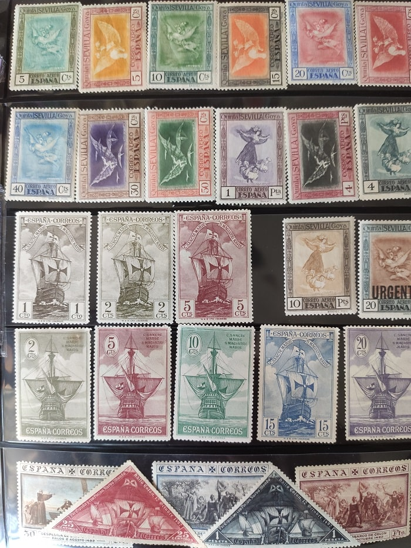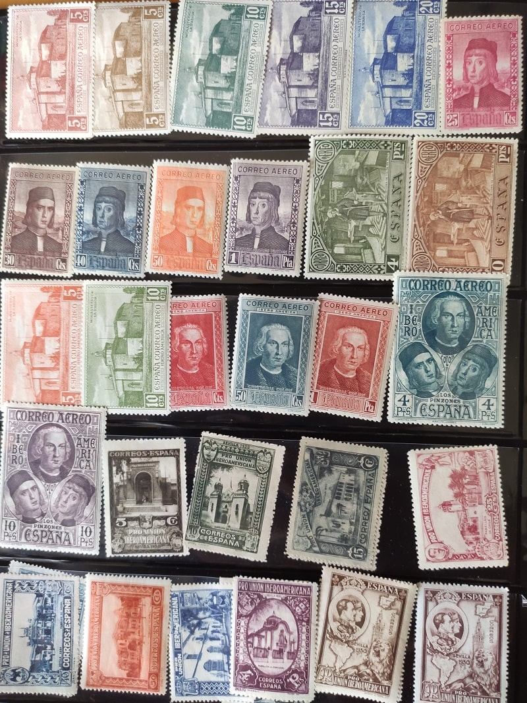
The most expensive are the series of railways or the aircraft with prices of up to € 800 for a series in perfect condition (good centering, with lots of color, rubber and no fixed).
Here I show some of my possession. They are between 400 and 600 of the EDIFIL numbering.

 In the Spanish civil war there were many stamps with a very small period of use and different Spanish regions. In addition to having two sides in the war each had their own images on the stamps. The runs were so short that they have some much more value than those of Alfonso XIII. While the quality of the seal leaves much to be desired.
In the Spanish civil war there were many stamps with a very small period of use and different Spanish regions. In addition to having two sides in the war each had their own images on the stamps. The runs were so short that they have some much more value than those of Alfonso XIII. While the quality of the seal leaves much to be desired.
On the republican side reference is made to the values of the republic and to the image of the allegory of the republic. The images of presidents and politicians in office. On the national side the odes to Spain and the patriotic tone is what is most mentioned. Also images with high catholic connotation.
From the civil war the stamps have hardly any value except for a few exceptions with ultrashort runs like those of Legazpi and Sorolla that are around € 300 in official value although it is not difficult to obtain them for around € 30.
That is why I do not recommend registering at the Spanish philatelic company at all and paying € 40 to get the full year since today's stamps will never be revalued. Quite the opposite in a few years can be achieved at the same price then and with the rise in inflation you will be losing money.
It is only advisable to do with old series since most of the runs of these series do not exceed 300,000 units and one day will come that the interest of the new emerging countries such as China or India with millions of people, and hundreds of rich thousands will make these stamps go up a lot because of their scarcity.

 Finally I will mention the stamps of other countries. Normally if you start collecting stamps it is normal to go for those of your country and then if there is something of interest or if you have a good chance to get some of the countries in your environment. In the images on the right are stamps of Italy from the first of the catalog with King Humberto I and those of Portugal. The price of stamps in these countries is much lower than the Spanish collection. While they have some fairly short new runs that cost a fortune.
Finally I will mention the stamps of other countries. Normally if you start collecting stamps it is normal to go for those of your country and then if there is something of interest or if you have a good chance to get some of the countries in your environment. In the images on the right are stamps of Italy from the first of the catalog with King Humberto I and those of Portugal. The price of stamps in these countries is much lower than the Spanish collection. While they have some fairly short new runs that cost a fortune.
To know the price there are many catalogs of which YVERT & TELLIER stands out.. This catalog contains all the existing stamps in the world. Due to the multitude of information it has several volumes and it is quite expensive if you buy an updated version. Although on the internet we can get an outdated catalog for a fraction of the price again.
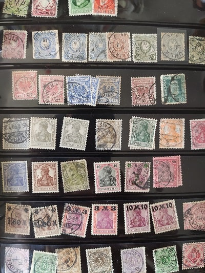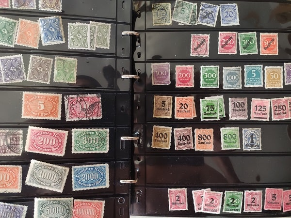
Below I show some of the German empire, some of the old Germany that was separated into independent states. These stamps of the states are highly valued. In my case I only have three or four that are those in the first row.
In my case I got hold of several of our neighboring countries such as France, Portugal, Italy and Germany. And some other country than I have some stamps.
The seals of the German empire after the First World War are remarkable with the Republic of Weimar " in how they were scaling the price until a stamp could be worth several million Marcos.
Below I show how are the stamps with the highest nominal value that I have seen worth one billion which translates to thousand . These stamps would be used very little since they are part of the last months of the great scarcity crisis and their use would be anecdotal.
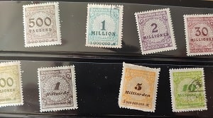
 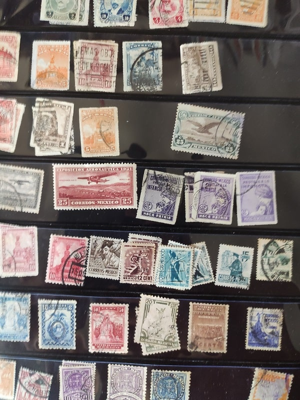
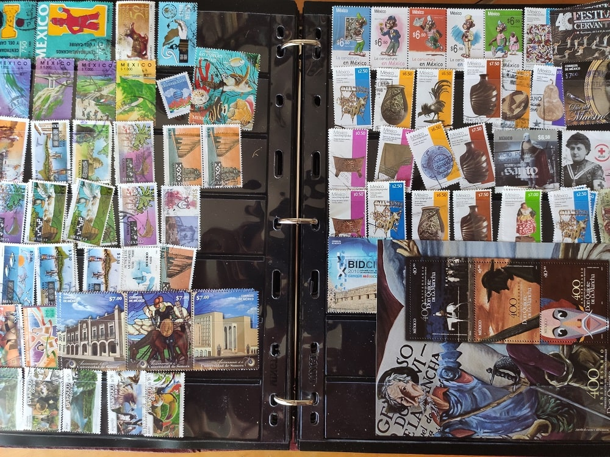
Later I would get a good collection of stamps from different countries in South America. On the right I show some of the oldest series in Mexico and some not so old. In particular, it is worth doing with old stamps and not new ones. The new stamps are overvalued and does not serve as a source of investment as with the Spanish stamps. Right now there are many sales with some of these stamps at a pretty good price compared to the value they can have attending the print run and the condition in which they are. That is why a good market for the one who understands. Yes, not investing more than one euro per stamp and trying to be at 10% -20% of the value of catalogs. Más tarde me haría con una buena colección de sellos de distintos países de Sudamérica. A la derecha muestro series de los más antiguos de México y algunos no tan antiguos.
En especial, vale la pena hacerse con sellos antiguos y no nuevos. Los sellos nuevos están sobrevalorados y no sirve de nada como fuente de inversión al igual que con los sellos españoles. Ahora mismo hay multitud de ventas con algunos de estos sellos a un precio bastante bueno en comparación con el valor que pueden tener atendiendo a la tirada y la condición en la que se encuentran. Es por ello un buen mercado para el que entienda. Eso sí, no invirtiendo más de un euro por sello y intentando que sea a un 10%-20% del valor de los catálogos.
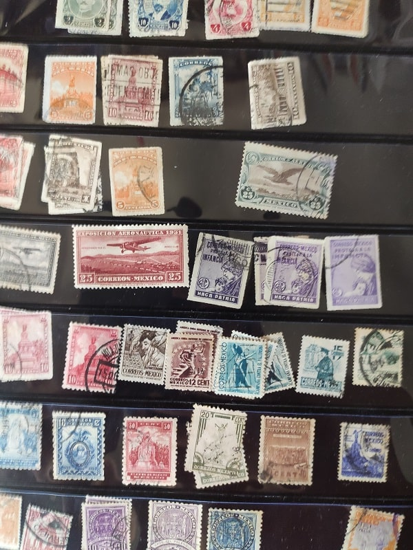
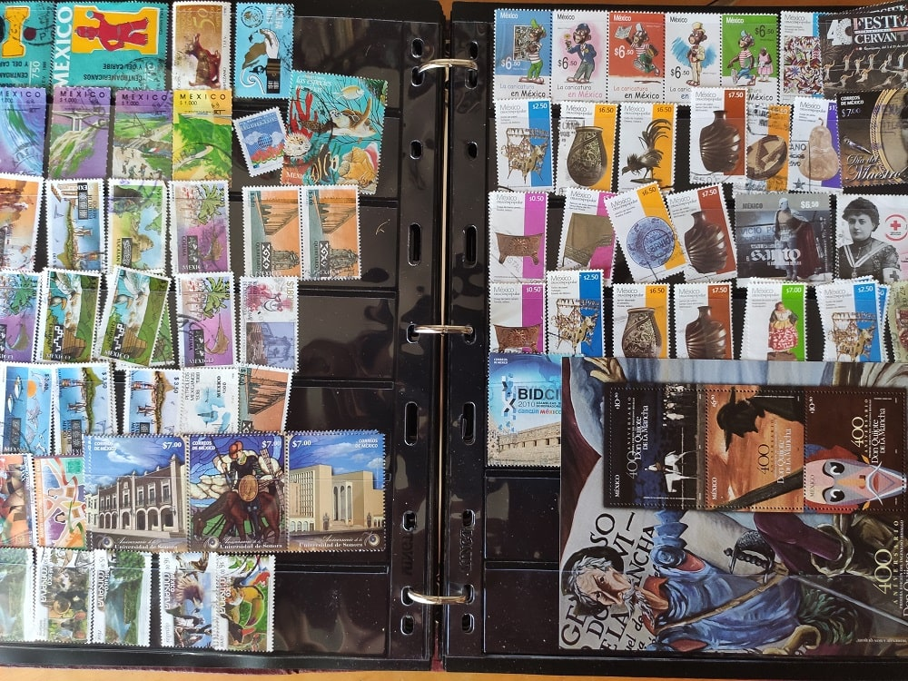
Later I would get a good collection of stamps from different countries in South America. On the right I show some of the oldest series in Mexico and some not so old. In particular, it is worth doing with old stamps and not new ones. The new stamps are overvalued and does not serve as a source of investment as with the Spanish stamps. Right now there are many sales with some of these stamps at a pretty good price compared to the value they can have attending the print run and the condition in which they are. That is why a good market for the one who understands. Yes, not investing more than one euro per stamp and trying to be at 10% -20% of the value of catalogs. Más tarde me haría con una buena colección de sellos de distintos países de Sudamérica. A la derecha muestro series de los más antiguos de México y algunos no tan antiguos.
En especial, vale la pena hacerse con sellos antiguos y no nuevos. Los sellos nuevos están sobrevalorados y no sirve de nada como fuente de inversión al igual que con los sellos españoles. Ahora mismo hay multitud de ventas con algunos de estos sellos a un precio bastante bueno en comparación con el valor que pueden tener atendiendo a la tirada y la condición en la que se encuentran. Es por ello un buen mercado para el que entienda. Eso sí, no invirtiendo más de un euro por sello y intentando que sea a un 10%-20% del valor de los catálogos.
For that reason, in these cases, I only invest in used stamps since, in my view, in several years the difference between new and used stamps will decrease.
The key is also to use it as a diversification of our long-term capital, not exceeding 2% of it in any case.
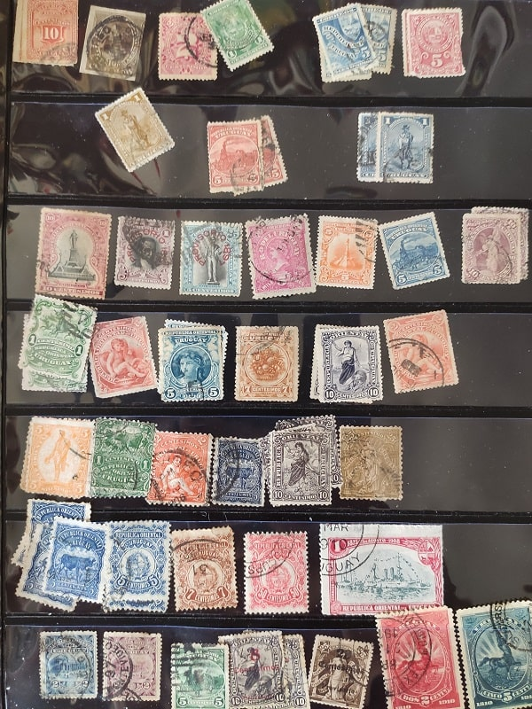
 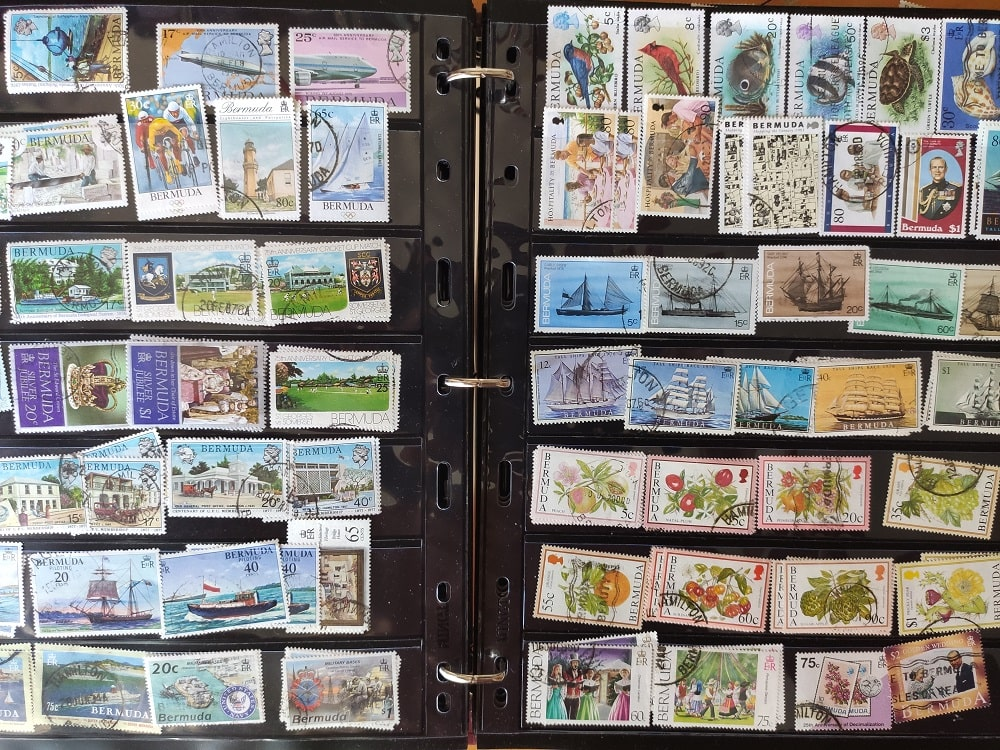
Here is a sample of the stamps of old Uruguay that I have that I made at a good price. Not having spent more than 20 euros for stamps that catalog prices could be around 200 euros.
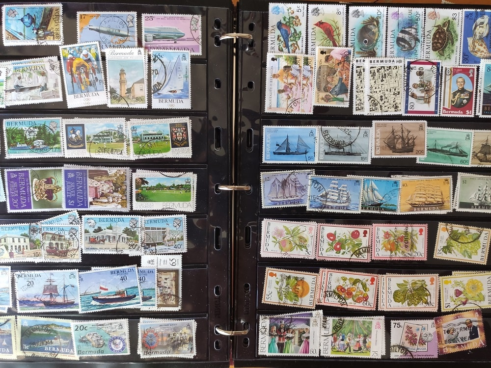
Here is a sample of the stamps of old Uruguay that I have that I made at a good price. Not having spent more than 20 euros for stamps that catalog prices could be around 200 euros.
On the other hand I show a lamina of stamps of the islands of Bermuda. There are many small states that emit a lot of stamps and that the state lives in part of philately because in the world there are a lot of people who collect all the stamps in the world. That is attractive since every year only with the issuance of stamps for this demand from outside the state earns a lot of money. I have many stamps but used whose value is very relative. I do not advise buying new stamps from these pseudo-states or tax havens like Bermuda, Cayman Islands, Antigua, etc. Only as a comment that there are countries that report large amounts of money.
Finally add that I have surplus albums of my purchases that I sell at a very good price. The stamp used around 0.03 € -0.05 € in packages of 1000 stamps adding the album where it is. If you are interested send an email to my address or in the same wallapop.
MI tienda en wallapop
EJEMPLO DE ALBUM QUE VENDO.
By using this site you agree to our Terms and Conditions. Please Accept these before using the site.
© 2016 - All Rights Reserved - Diseñada por Sergio López Martínez
El sitio se mantiene gracias a la publicidad, por favor Desactiva Adblock para seguir navegando
He desactivado Adblock![[Valid RSS]](https://www.onepointsync.com/wp-content/uploads/2016/08/valid-rss-rogers.png "Validate my RSS feed")